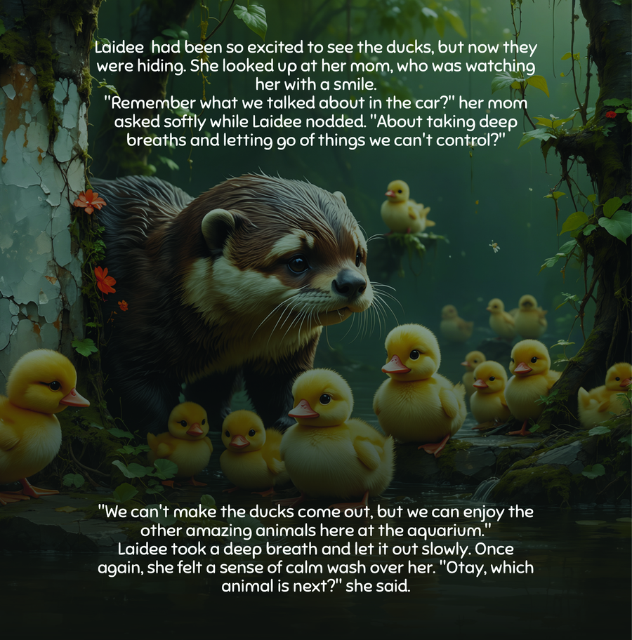
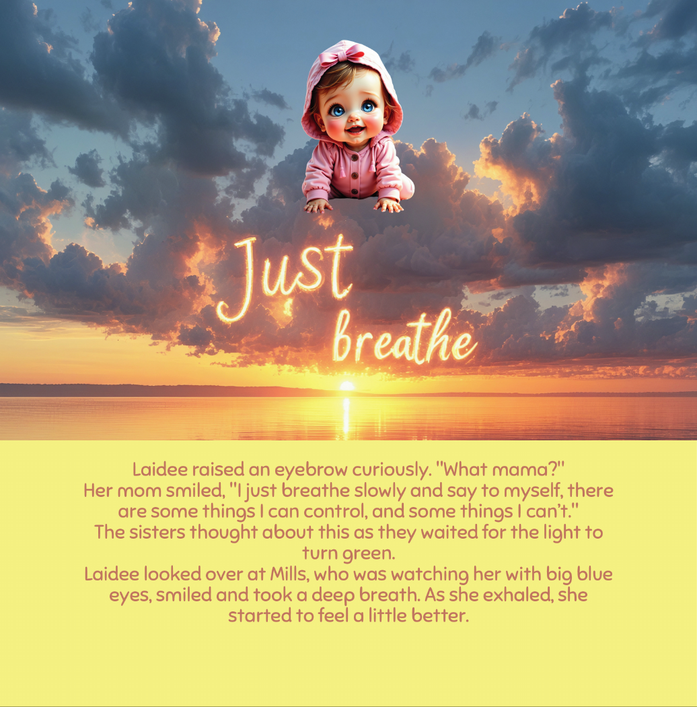
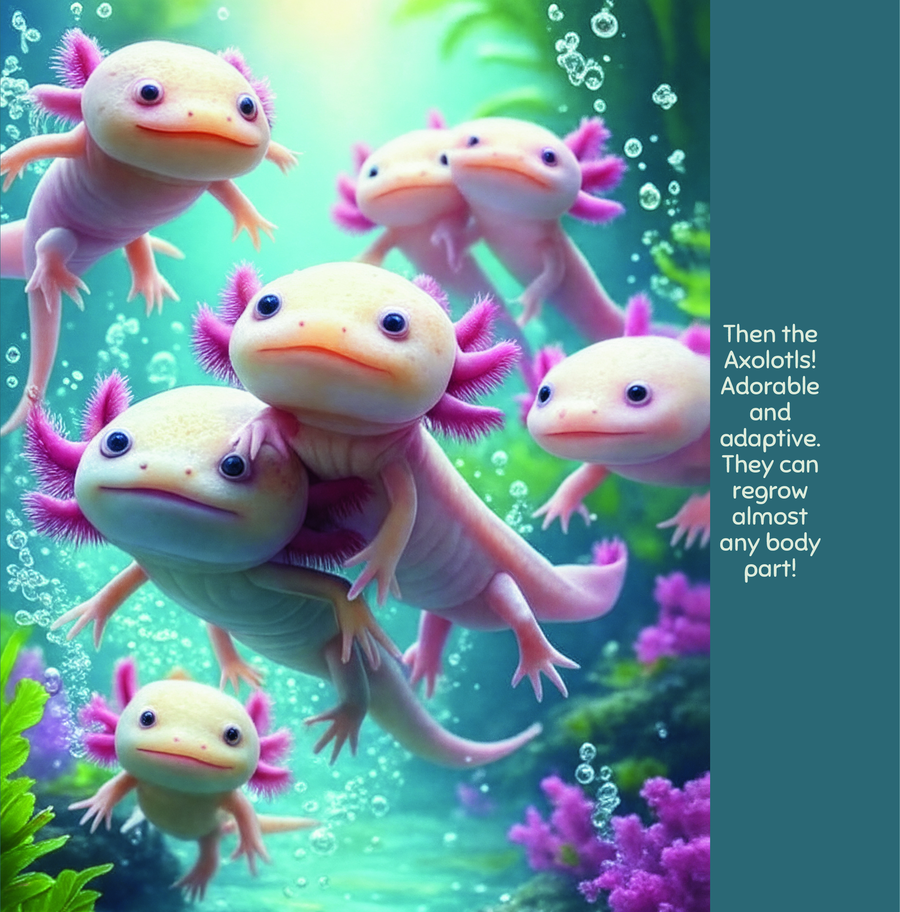

How the right picture book transforms a curious child into a lifelong marine science enthusiast. Meet the creatures, understand the science, and discover the books that make it all click.
This guide bridges the gap between picture books and marine science. Whether your child is fascinated by sharks, mesmerized by jellyfish, or simply loves anything underwater — you’ll learn exactly how to nurture that curiosity into deep, lasting knowledge.
Research in early childhood development consistently shows that picture books are among the most powerful educational tools available. When children encounter vivid, emotionally engaging stories about the natural world, they form lasting neural connections that no worksheet or video can replicate.
The best marine life picture books trigger what researchers call the wonder-curiosity-learning loop. The child encounters something beautiful and unexpected in a book, feels genuine wonder, then wants to know more. That wanting-to-know is curiosity — the most powerful learning engine nature ever built. And when that curiosity is fed with answers (from the book itself, from a parent, or from a real-life experience like an aquarium visit), true learning happens.
The loop then repeats: deeper knowledge creates deeper wonder, which fuels deeper curiosity. This is how a child who reads A Fintastic Day at the Aquarium at age 3 ends up studying marine biology at age 23. It all starts with the right book at the right moment.
Child sees something beautiful and surprising
Child wants to know more about it
Answers deepen understanding
New knowledge opens new questions
Aquariums are portals to another world. These are the incredible creatures your child will encounter in the best ocean picture books — and eventually in real life at the aquarium. Each one offers unique learning opportunities.
The ocean’s most famous predators have been around for 450 million years — older than dinosaurs. Children are simultaneously fascinated and slightly terrified, making sharks the ultimate gateway to marine science. In A Fintastic Day at the Aquarium, the shark tunnel is a breathtaking moment that captivates every young reader.
No brain, no heart, no blood — yet jellyfish are among the most mesmerizing creatures in the sea. Their bioluminescent glow in darkened aquarium exhibits captivates children like nothing else. Picture books that feature jellyfish naturally introduce concepts of adaptation and survival.
Intelligent, social, and playful — dolphins are the ocean animals children relate to most naturally. They live in families, communicate with each other, and play games. Books featuring dolphins teach empathy, social bonds, and the intelligence of marine mammals.
Floating on their backs, holding hands while sleeping, cracking shells on their bellies — sea otters are nature’s most adorable engineers. They teach children about tool use in the animal kingdom and the concept of keystone species in ecosystem health.
Clownfish, angelfish, tangs — the dazzling colors of coral reef fish captivate every child who sees them. These fish teach about camouflage, symbiosis (clownfish and anemones!), and the incredible biodiversity hidden beneath the waves. The vibrant fish scenes in A Fintastic Day at the Aquarium are among children’s favorite pages.
Ancient, gentle, and endangered — sea turtles naturally introduce children to conservation. Their epic migrations across entire oceans teach about navigation, perseverance, and why protecting marine habitats matters for every species on Earth.


These books were specifically chosen for their ability to teach real marine science through engaging storytelling. Each one balances accuracy with wonder — the magic formula that makes learning stick.
The gold standard for combining marine science with emotional storytelling. Every aquarium exhibit is rendered with scientific accuracy — the shark species are identifiable, the jellyfish glow realistically, the coral reef teems with accurate biodiversity. But it’s the warm story of curiosity and wonder that makes children beg to read it again. Get it on Amazon →
Stunning real photographs paired with age-appropriate text. Covers ocean zones, animal adaptations, and marine habitats. The “Try This!” activities throughout make it interactive. Best for ages 4–8 who are ready for more factual content alongside their story books.
Ms. Frizzle’s class explores the ocean in a submarine, learning about tides, coral reefs, and deep-sea creatures. The sidebar facts are genuinely educational, and the narrative makes complex science accessible. A must-own for curious 5–8 year-olds.
A counting rhyme that teaches children to identify real reef species. The plasticine-style illustrations are gorgeous and distinctive. Includes a scientific identification guide at the back. Perfect for ages 3–6 learning to count while absorbing marine biology.
Eric Carle’s collage art introduces the extraordinary world of fish fathers who carry eggs. The clever acetate overlay pages hide different fish — teaching camouflage. A beautiful, accurate introduction to marine reproduction and adaptation.
A tiny fish uses teamwork and cleverness to outsmart a predator. Beyond the cooperation theme, Lionni’s watercolor collages accurately depict the food chain, schooling behavior, and predator-prey dynamics. Caldecott Honor winner — a timeless classic.
Fish and sea creatures have captured children’s imaginations for generations. There’s something uniquely compelling about creatures that live in a world invisible to us — an underwater kingdom just beyond our reach. Here’s why they work so well in children’s literature.
Fish are alien enough to be exciting but familiar enough to be relatable. A child has probably seen a goldfish, maybe visited an aquarium, definitely seen Finding Nemo. This creates the perfect bridge between the known and the mysterious — exactly where curiosity lives.
Ocean creatures are nature’s most colorful, varied, and visually stunning animals. Illustrators love drawing them because the color palette is limitless. This means ocean picture books tend to be the most visually spectacular books on the shelf — and children are drawn to beauty.
The ocean contains more species diversity than all land habitats combined. From microscopic plankton to the blue whale (the largest animal ever to live), the range of characters available for storytelling is infinite. This means ocean books can be endlessly varied while always teaching something new.
Every great fish book triggers natural questions: How do they breathe underwater? Do they sleep? Why is that fish so colorful? Can sharks really smell blood from far away? These questions are the raw material of scientific thinking. A child who asks “why” is already a scientist.
When a child reads an ocean book, they’re not just having fun (though they absolutely are). Behind the scenes, their brain is building frameworks for scientific understanding, environmental awareness, and emotional intelligence.
Species names, habitats, behaviors, diets, and life cycles. Children absorb facts effortlessly through engaging stories.
Words like bioluminescent, ecosystem, camouflage, and predator enter naturally through books. No flashcards needed.
Children who love ocean animals naturally develop care for their habitats. Empathy for creatures leads to conservation values.
Understanding food chains, ecosystems, and how ocean creatures depend on each other builds foundational scientific reasoning.
Detailed illustrations train children to look closely, notice patterns, and spot differences — core skills for all STEM fields.
Stories about sea creatures help children care about animals beyond their own experience. This builds emotional range and kindness.
You don’t need a marine biology degree to help your child learn from ocean picture books. These practical strategies transform passive reading into active learning — naturally, without turning storytime into a lesson.
While reading, occasionally pause and say, “I wonder why that jellyfish glows” or “I wonder how deep the ocean really is.” You’re modeling curiosity — teaching your child that wondering is valuable, not a sign of ignorance. This single technique is the most powerful learning tool you have.
When a child asks about a creature from a book, look it up together. Watch a 30-second video of a real jellyfish. Find a photo of the actual species. This bridges the gap between illustration and reality, reinforcing that the book connects to the real world.
After reading, invite your child to draw their favorite ocean animal from the book. Don’t worry about accuracy — the act of recreating something from memory strengthens recall and builds creative confidence. Display their artwork proudly.
The most powerful learning happens when book knowledge meets real experience. Visit an aquarium after reading A Fintastic Day at the Aquarium. Watch an ocean documentary. Explore a tide pool on vacation. Each connection multiplies the learning impact.
Children love pointing out what’s the same and different between the book version and real life. “The jellyfish in the book was blue, but this real one is pink!” This comparison builds critical thinking and scientific observation skills naturally.
The best learning happens when children move from page to play. These simple activities require minimal materials and maximum imagination — extending the wonder of ocean books into your child’s everyday world.
Tape a large sheet of paper to the wall. After each ocean book you read together, add the new creatures you discovered. Over weeks, build a complete underwater world — a visual record of everything learned.
Print photos of real ocean animals and paste them next to your child’s drawings of the same creatures from books. Label both. This builds observation skills and creates a treasured keepsake.
Act out scenes from the book using stuffed animals or hand puppets. Let your child be the narrator. Retelling stories in their own words is one of the most powerful comprehension exercises that exists.
After reading about a specific creature, watch a 5-minute age-appropriate documentary clip about it. The combination of illustration + story + real footage creates three layers of understanding that cement knowledge.
Simple experiments bring ocean concepts to life. Float and sink experiments teach density. Salt water vs. fresh water experiments show why the ocean is salty. Baking soda and vinegar “underwater volcanoes” demonstrate deep-sea geology.
The ultimate extension activity. Read A Fintastic Day at the Aquarium before going, then challenge your child to find every creature from the book. The moment of recognition — “That’s the jellyfish from our book!” — is pure learning gold.
The full story behind Guinea Padre’s bestselling ocean adventure picture book.
Every ocean book your child needs — organized by age, occasion, and reading goal.
The complete parent’s guide to books, gifts, activities, and building ocean passion.
Deep-dive into the best science-focused ocean books for curious young minds.
A Fintastic Day at the Aquarium by Guinea Padre is designed to ignite the wonder-curiosity-learning loop on every page. Stunning science, warm storytelling, and world-class art — all in one book.